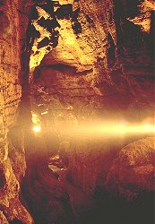

Kents Cavern
Description by Tony Oldham
|  |
| Image: A passage in Kents Cavern. |
{kind=link}
Although today one is unlikely to see any animal life in Kents Cavern, except the occasional bat, there was a time when it went through a long period of habitation, both by man and by animals. Since 1828 Kents Cavern has been the subject of many archaeological excavations and the research workers have found many items of interest. Flint implements found indicated that they must have been made and used by man at least 100,000 years ago. They also found the fireplace where primitive man cooked his meals and the bones of many animals, now extinct, which he used to eat. The implements include harpoons, awls, combs and brooches. Animal remains include those of rhinoceros, wolf, cave lion, hyena, cave bear, baby mammoth and Irish elk. These can be seen both at the small museum at the cave and at the Torquay Natural History Society Museum at Wellswood, Torquay.
Ancient cave man would hardly recognise his former home today. The tour of the cave is a circular one, and throughout it is possible to see the original floor level high above, the section below having been excavated for archaeological remains.
Kents Cavern is profusely decorated with stalagmites and stalactites of every colour and hue, which are shown to great advantage in the electric lights, which are carefully placed in order that they should not be obtrusive. Some of the best formations are to be found in the Organ Chamber.
One of the most famous formations in the cave is that known as the Lion. On the head of the Lion is the inscription Robert Hedges of Ireland, Feb. 20 1688. By calculating the amount of stalagmite which has filled in the inscription since it was carved out, it is possible to estimate the length of time it takes the stalagmite to grow. So although Mr Hedges was possibly the first of the cave vandals, he unconsciously provided a valuable source of reference to those who came after.
On the way round the cave the guide points out the various places where archaeological finds of note were made, including the remains of a cave bear's skull, which is still embedded in the roof.
Apart from being a very pleasant trip, this tour is both educational and informative.
Text from: Tony and Anne Oldham (1972): Discovering Caves - A guide to the Show Caves of Britain. With kind permission by Tony Oldham.